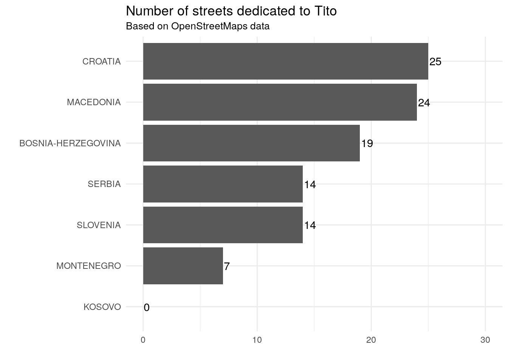
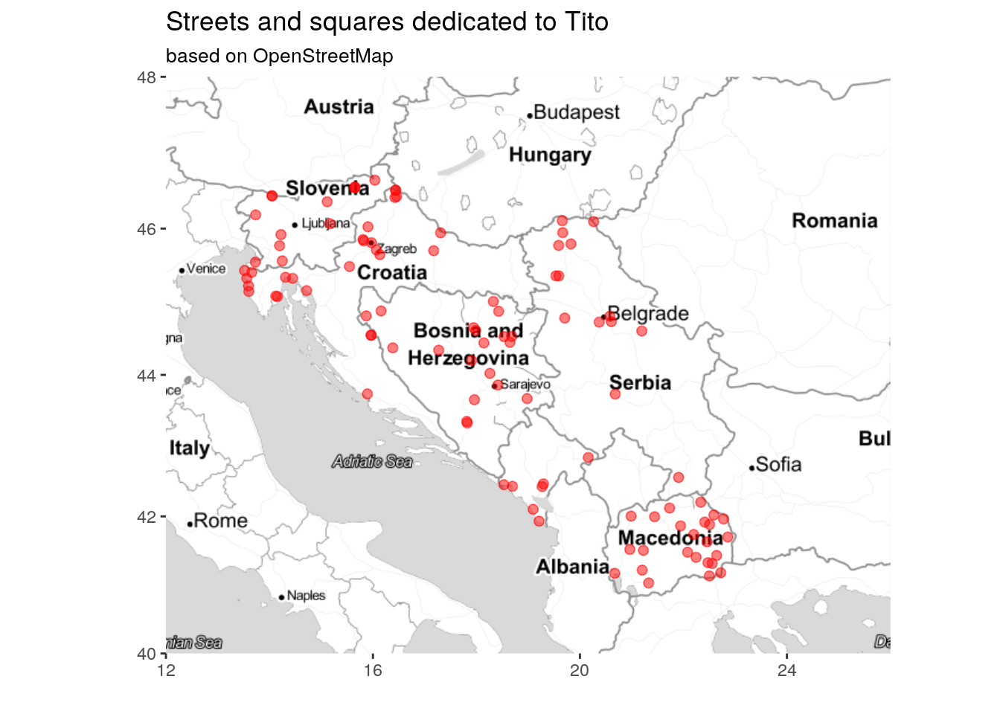
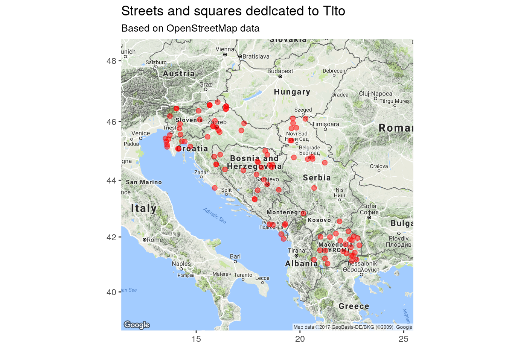
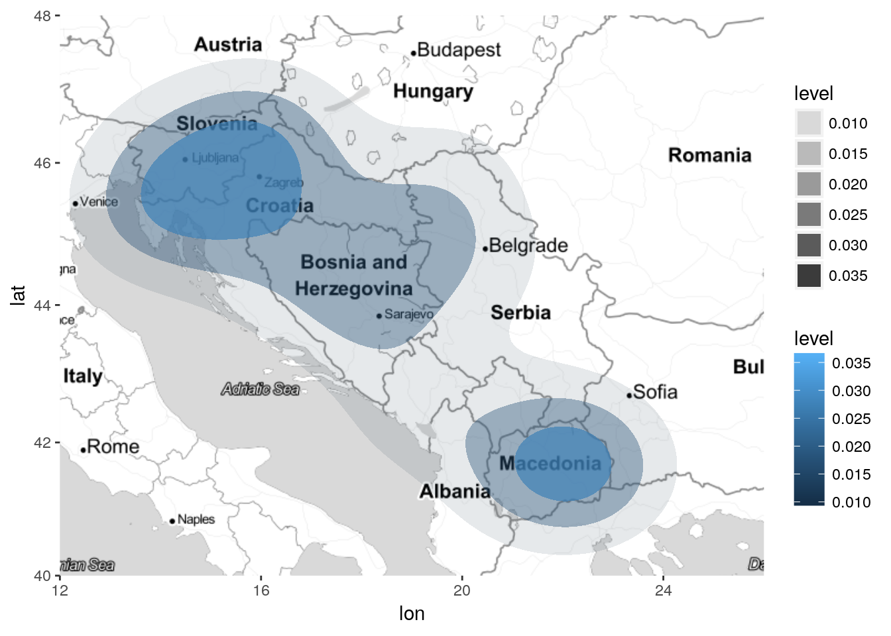

2 Extracting data from OpenStreetMap
2.1 Installing OpenStreetMap packages
Filtering and extracting contents from OpenStreetMap dump files is facilitated by dedicated utilities. In this project, Osmconvert and Osmfilter have been used to filter relevant data.
# install osmfilter
if (file.exists("osmfilter")==FALSE) {
system(command = "wget -O - http://m.m.i24.cc/osmfilter.c |cc -x c - -O3 -o osmfilter")
}
# install osmconvert
if (file.exists(file.path("osmconvert64"))==FALSE) {
download.file(url = "http://m.m.i24.cc/osmconvert64", destfile = file.path("osmconvert64"))
system(command = "chmod +x osmconvert64")
}2.2 Download OpenStreetMap data
It is possible to download all available data for selected countries from online repositories.
dir.create(path = "data", showWarnings = FALSE)
dir.create(path = file.path("data", "pbf"), showWarnings = FALSE)
for (i in countries) {
if (file.exists(file.path("data", "pbf", paste0(i, "-latest.osm.pbf")))==FALSE) {
download.file(url = paste0("http://download.geofabrik.de/europe/", i, "-latest.osm.pbf"),
destfile = file.path("data", "pbf", paste0(i, "-latest.osm.pbf")))
}
}2.3 Keep only street names
Through the above-mentioned utilities, all names of street found in the region have been extracted from the dump and converted to .cvs format. This has been accomplished by filtering only the names of objects recorded under the key highway in OpenStreetMap, which according to OpenStreetMap’s wiki and in spite of its name, “is the main key used for identifying any kind of road, street or path.”
At this stage, only streets have been included in the filter, but other OpenStreetMap categories may include relevant data, e.g. Tag:place=square, or Tag:leisure=park.
# convert to a format that can be read by osmfilter, and remove author data to reduce file size
dir.create(path = file.path("data", "o5m"), showWarnings = FALSE)
for (i in countries) {
if (file.exists(file.path("data", "o5m", paste0(i, "-latest.o5m")))==FALSE) {
system(paste0('./osmconvert64 data/pbf/', i,
'-latest.osm.pbf --drop-version --out-o5m -o=data/o5m/', i,
'-latest.o5m'))
}
}
# filter only streets
dir.create(path = file.path("data", "o5m-streets"), showWarnings = FALSE)
for (i in countries) {
if (file.exists(file.path("data", "o5m-streets", paste0(i, "-streets.o5m")))==FALSE) {
system(paste0('./osmfilter data/o5m/', i, '-latest.o5m --keep="highway=*" --drop-version > ', 'data/o5m-streets/', i, '-streets.o5m'))
}
}
# export to csv only street type, name, and lon/lat
dir.create(path = file.path("data", "csv-streets"), showWarnings = FALSE)
for (i in countries) {
if (file.exists(file.path("data", "csv-streets", paste0(i, "-streets.csv")))==FALSE) {
system(paste0('./osmconvert64 data/o5m-streets/', i,
'-streets.o5m --all-to-nodes --csv="@id @lat @lon highway name" > data/csv-streets/', i,
'-streets.csv', " --csv-separator='; '"))
}
}2.4 Keep only street names including reference to Tito
Once all street names have been extracted, only street names inlcuding reference to Tito have been kept for further analysis.
Criteria for filters:
- ends with ‘Tito’
- ends with ‘Tita’
- includes ‘Titov’
- includes ‘Тито’ (and accordingly, also all ‘Титов’ etc., but excluding “Ктито*’)
StreetsSummary <- data_frame(Country = countries, TotalStreets = as.integer(NA), TitoStreets = as.integer(NA))
FindTito <- "Tito$|Tita$|Titov|Титов|(?<!К)Тито"
tito_all <- data_frame()
for (i in countries) {
# Import from csv
temp_streets <- read_delim(file = file.path("data", "csv-streets", paste0(i, "-streets.csv")),
delim = "; ",
col_names = FALSE,
locale = locale(decimal_mark = "."),
trim_ws = TRUE)
# Store total number of streets for each country
StreetsSummary$TotalStreets[StreetsSummary$Country==i] <- nrow(temp_streets)
# Filter only Tito's streets
temp_tito <- temp_streets %>%
filter(is.na(X5)==FALSE) %>%
filter(stringr::str_detect(string = X5, pattern = stringr::regex(pattern = FindTito, ignore_case = TRUE))) %>%
transmute(lat = X2, lon = X3, streetname = X5) %>%
# remove duplicate location with which have similar coordinates (same first decimal)
mutate(lonShort = format(lon, digit = 3), latShort = format(lat, digit = 3)) %>%
distinct(lonShort, latShort, .keep_all = TRUE) %>%
select(-lonShort, -latShort) %>%
mutate(country = i)
# Store number of Tito's streets in given country
StreetsSummary$TitoStreets[StreetsSummary$Country==i] <- nrow(temp_tito)
# Merge table for each country
tito_all <- bind_rows(tito_all, temp_tito)
}
tito_all <- tito_all %>% distinct()
# tito_all <- tito_all %>%
# mutate(lonShort = format(lon, digit = 4), latShort = format(lat, digit = 4)) %>%
# distinct(lonShort, latShort, .keep_all = TRUE) %>%
# select(-lonShort, -latShort)
ExportData(data = tito_all, filename = "OSM_tito_all")The data are available as a spreadsheet in .csv, .xlsx, and as a data frame in R’s .rds format.
2.5 Preliminary results based on OpenStreetMap
As appears from the following sections, these data include substantial inaccuracies. They are reported here as preliminary results based on OpenStreetMap. See the following sections for more accurate data.
2.5.1 Number of streets dedicated to Tito
StreetsSummary %>%
arrange(TitoStreets) %>%
mutate(Country = toupper(Country)) %>%
mutate(Country = forcats::fct_inorder(Country)) %>%
ggplot(aes(x = Country, y = TitoStreets, label = TitoStreets)) +
geom_col() +
scale_y_continuous(name = "", limits = c(0, 30)) +
scale_x_discrete(name = "") +
geom_text(hjust = -0.1) +
coord_flip() +
theme_minimal() +
labs(title = "Number of streets dedicated to Tito",
subtitle = "Based on OpenStreetMaps data")
ShowTable(data = StreetsSummary %>% arrange(desc(TitoStreets)))| Country | TotalStreets | TitoStreets |
|---|---|---|
| croatia | 3873902 | 25 |
| macedonia | 739505 | 24 |
| bosnia-herzegovina | 2077207 | 19 |
| slovenia | 3231464 | 14 |
| serbia | 2423391 | 14 |
| montenegro | 713605 | 7 |
| kosovo | 672647 | 0 |
2.6 Putting streets dedicated to Tito (according to OpenStreetMap) on a map
# Setting the coordinates
wb <- c(left = 12, bottom = 40, right = 26, top = 48)
# Preparing the canvas, and forcing cache
if (file.exists(file.path("temp", "mapTonerLite.rds"))==FALSE) {
saveRDS(object = ggmap::get_stamenmap(bbox = wb, zoom = 6, maptype = "toner-lite") %>% ggmap(), file = file.path("temp", "mapTonerLite.rds"))
}
mapTonerLite <- readRDS(file = file.path("temp", "mapTonerLite.rds"))
OSM_TitoTonerLight <- mapTonerLite + geom_point(data=tito_all, aes(x=lon, y=lat), color="red", size=2, alpha=0.5) +
labs(x = '', y = '') +
labs(title = "Streets and squares dedicated to Tito",
subtitle = paste("based on OpenStreetMap"))
OSM_TitoTonerLight
ExportGraph(graph = OSM_TitoTonerLight, filename = "OSM_TitoTonerLight") This image is available for download in .png, .svg, and as an object in R’s .rds format.
{kind=link}
{kind=link}
# Preparing the canvas
dir.create(path = "temp", showWarnings = FALSE)
## forcing cache to prevent reloading map from Google Maps each time
if (file.exists(file.path("temp", "mapG.rds"))==FALSE) {
saveRDS(object = get_googlemap("Sarajevo", scale = 2, zoom = 6), file = file.path("temp", "mapG.rds"))
}
mapG <- readRDS(file = file.path("temp", "mapG.rds"))
ggmap(mapG) +
geom_point(data=tito_all, aes(x=lon, y=lat), color="red", size=2, alpha=0.5) +
labs(x = '', y = '') +
labs(title = "Streets and squares dedicated to Tito",
subtitle = paste("Based on OpenStreetMap data"))
ExportGraph(filename = "OSM_TitoGmaps") This image is available for download in .png, .svg, and as an object in R’s .rds format.
{kind=link}
{kind=link}
# # Preparing the canvas
# mapWatercolor <- get_stamenmap(bbox = wb, zoom = 7, maptype = "watercolor") %>% ggmap()
# # Adding the dots
# mapWatercolor + geom_point(data=tito_all, aes(x=lon, y=lat), color="red", size=2, alpha=0.5) +
# labs(x = '', y = '') + ggtitle("Streets dedicated to Tito")
# ggsave("TitoWatercolor.png")2.7 Alternative density maps
Testing alternative visualisations.
mapTonerLite +
stat_density2d(
aes(x = lon, y = lat, fill = ..level.., alpha = ..level..),
size = 2, bins = 4, data = tito_all,
geom = "polygon"
)
2.8 Summary of all relevant street names found on OpenStreetMap
The following table presents all versions of street names including reference to Tito found in each of the countries included in the analysis.
tito_all_streetname <- tito_all %>% select(country, streetname) %>% group_by(country, streetname) %>% count() %>% arrange(country, desc(n), streetname)
ShowTable(data = tito_all_streetname)| country | streetname | n |
|---|---|---|
| bosnia-herzegovina | Maršala Tita | 11 |
| bosnia-herzegovina | Titova | 4 |
| bosnia-herzegovina | Titova ili Put Oficirske Škole | 1 |
| bosnia-herzegovina | Trg maršala Tita | 1 |
| bosnia-herzegovina | Ul Maršala Tita | 1 |
| bosnia-herzegovina | ul. Maršala Tita | 1 |
| croatia | Maršala Tita | 6 |
| croatia | Ulica Maršala Tita | 4 |
| croatia | Obala Maršala Tita | 2 |
| croatia | Titov trg | 2 |
| croatia | Hodaliste marsala tita | 1 |
| croatia | Josipa Broza Tita | 1 |
| croatia | Obala Josipa Broza Tita | 1 |
| croatia | Obala m. Tita | 1 |
| croatia | Poljana maršala Tita | 1 |
| croatia | Trg J. B. Tita | 1 |
| croatia | Trg Josipa Broza Tita | 1 |
| croatia | Trg maršala Tita | 1 |
| croatia | Trg Maršala Tita | 1 |
| croatia | Ulica Josipa Broza Tita | 1 |
| croatia | Ulica Josipa Broza-Tita | 1 |
| macedonia | Маршал Тито | 14 |
| macedonia | bul. Marsal Tito | 1 |
| macedonia | Marsal Tito | 1 |
| macedonia | Marshal Tito | 1 |
| macedonia | ul. Marshal Tito | 1 |
| macedonia | Кеј Маршал Тито | 1 |
| macedonia | Титова Митровачка | 1 |
| macedonia | Титовелешка | 1 |
| macedonia | Титово Ужице | 1 |
| macedonia | ул. Маршал Тито | 1 |
| macedonia | Улица Маршал Тито | 1 |
| montenegro | Marsala Tita | 2 |
| montenegro | Gjergj Kastrioti - Skënderbeu / Maršal Tito | 1 |
| montenegro | Josipa Broza Tita | 1 |
| montenegro | Maršala Tita | 1 |
| montenegro | Titove Korenice | 1 |
| montenegro | trg Maršala Tita | 1 |
| serbia | Maršala Tita | 5 |
| serbia | Титоградска | 4 |
| serbia | Aleja Maršala Tita | 1 |
| serbia | Marsala Tita | 1 |
| serbia | Ulica Marsala Tita | 1 |
| serbia | Тито Маршал | 1 |
| serbia | Титова | 1 |
| slovenia | Titova ulica | 3 |
| slovenia | Cesta maršala Tita | 2 |
| slovenia | Titova cesta | 2 |
| slovenia | Trg maršala Tita | 2 |
| slovenia | Titov most | 1 |
| slovenia | Titov trg | 1 |
| slovenia | Titov trg / Piazza Tito | 1 |
| slovenia | Titova - Nasipna | 1 |
| slovenia | Ulica Josipa Broza-Tita | 1 |
ExportData(data = tito_all_streetname, filename = "tito_all_streetname")The data are available as a spreadsheet in .csv, .xlsx, and as a data frame in R’s .rds format.